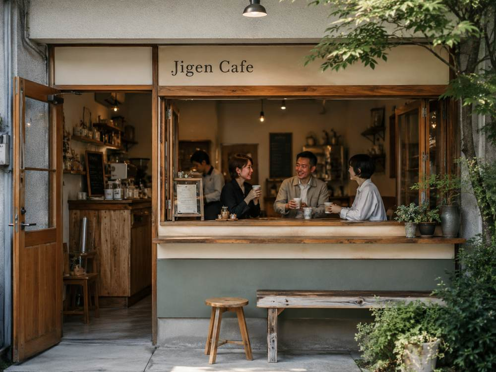
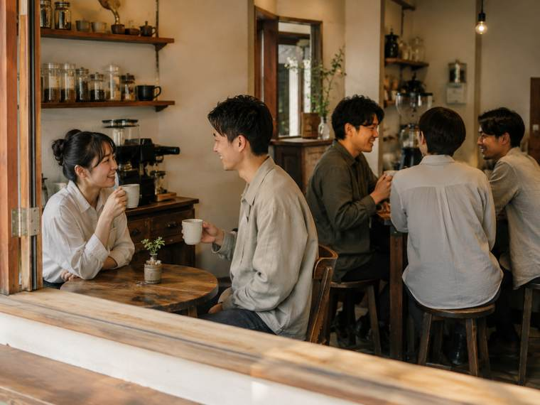
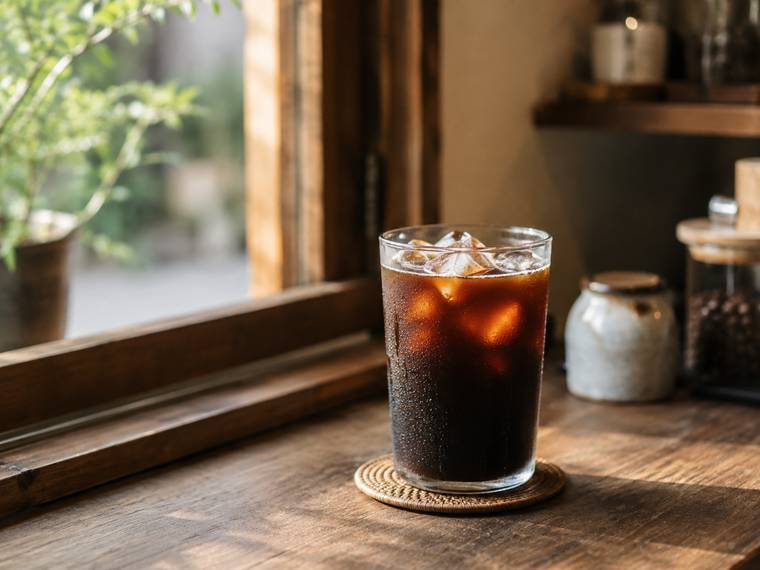
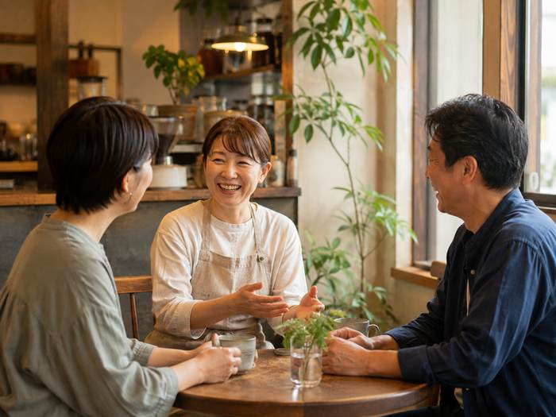
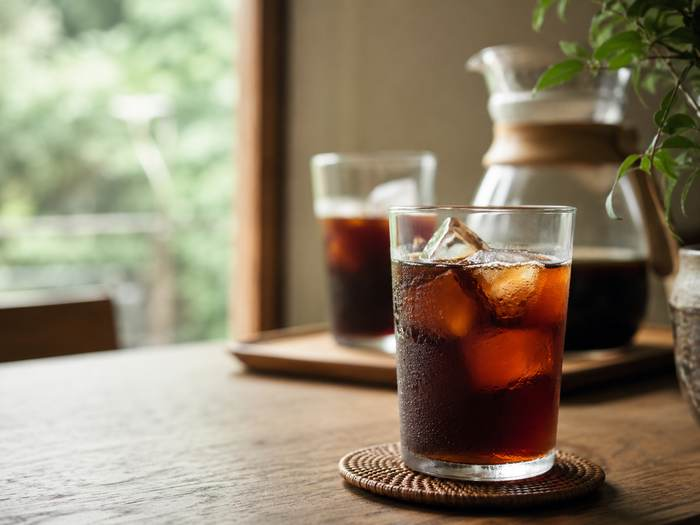
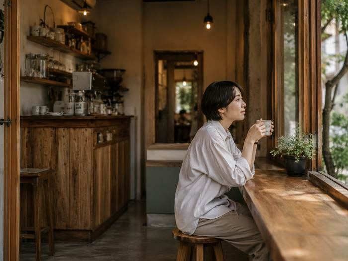

ABOUT
Jigen Cafeが大切にしていること
Jigen Cafeの創業者名や詳しい開業の経緯は、公式情報からは確認できません。ただし公式Facebookでは、地域の人がコーヒーを飲みながら交流できる場所として、このお店がオープンしたことが案内されています。
食事メニューを置かず、コーヒーだけを提供するシンプルなスタイルは、コーヒーを介した会話や、そうした時間を大切にする店づくりとして捉えることができます。気さくな店主との会話も、Jigen Cafeで過ごす時間の魅力のひとつです。

コーヒーを飲みながら、地域の人と交流できる場所。
食事メニューを置かず、コーヒーに特化したシンプルな喫茶店です。気さくな店主や地域の人との会話を楽しみながら、ゆっくり過ごせる時間を提供しています。
※イメージ画像です。実際の店舗外観とは異なります。
CONCEPT
公式Facebookでは、地域の人がコーヒーを飲みながら交流できる場所として案内されています。食事メニューを置かず、コーヒーに特化することで、会話やゆったりとした時間そのものを大切にする空間になっています。

STRENGTHS
公式Facebookから確認できる情報をもとに、３つの強みとして整理しました。
食事メニューを置かず、コーヒーのみを提供しています。注文に迷わず、コーヒーそのものに集中できる時間を過ごせます。
「地域の人がコーヒーを飲みながら交流できる場所」がコンセプトです。気さくな店主との会話も楽しめます。
アイスコーヒーは水出しで提供しています。じっくり時間をかけて抽出した一杯を楽しめます。

ABOUT
Jigen Cafeの創業者名や詳しい開業の経緯は、公式情報からは確認できません。ただし公式Facebookでは、地域の人がコーヒーを飲みながら交流できる場所として、このお店がオープンしたことが案内されています。
食事メニューを置かず、コーヒーだけを提供するシンプルなスタイルは、コーヒーを介した会話や、そうした時間を大切にする店づくりとして捉えることができます。気さくな店主との会話も、Jigen Cafeで過ごす時間の魅力のひとつです。
FEATURED
公式Facebookの情報と店舗コンセプトから、Jigen Cafeならではの体験として整理しました。
Jigen Cafeでは食事メニューを置かず、コーヒーのみを提供するシンプルなスタイルを取っています。店主や地域の人との会話を楽しみながら、ゆっくりコーヒーを味わえる交流型の喫茶サービスです。
HOW TO ENJOY

気さくな店主や、居合わせた地域の人との会話を楽しみながら過ごせます。
※イメージ画像です。実際のスタッフ・お客様とは異なります。

手間をかけて抽出した水出しアイスコーヒーで、ゆっくりひと休みできます。
※イメージ画像です。

食事メニューがない分、コーヒーそのものに集中して味わう時間になります。
※イメージ画像です。実際のお客様とは異なります。
今日の気分を５つの質問で選ぶと、Jigen Cafeでの過ごし方のタイプをご紹介します。
対象のお客様：はじめて来店される方や、今日のJigen Cafeの雰囲気を知りたい方
解決したいこと：営業日が店主の都合で変わることがあるため、来店前に公式Facebookで営業状況を確認する習慣を自然に案内すること
今後の展開案：今日営業しているかをその場で確認できる表示や、豆・水出しコーヒーの取り置き予約サービスがあれば、より安心して来店計画を立てやすくなります（これは新サービス提案であり、現在提供中のサービスではありません）。
STORE INFO
住所・電話番号・営業時間など、上記以外の情報は公式Facebook上で確認できなかったため掲載しておりません。最新情報は店舗の公式案内をご確認ください。
CONTACT
営業状況やお店の様子は、公式Facebookでご覧いただけます。